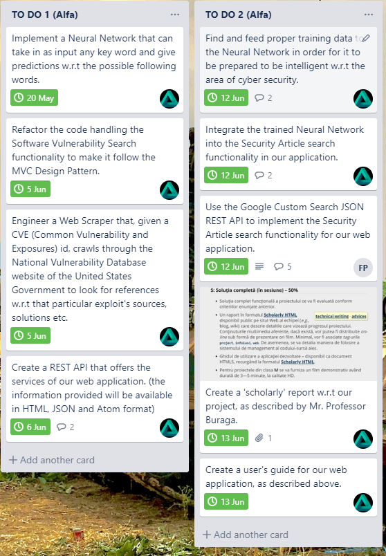
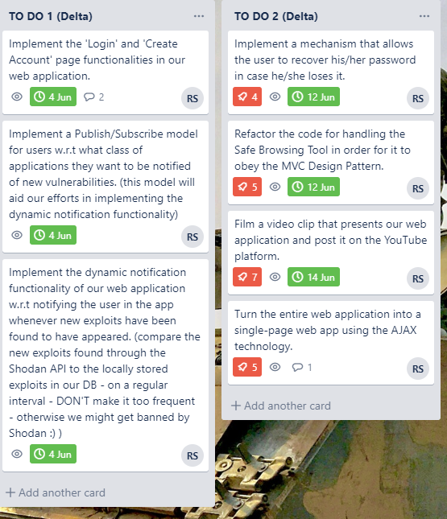

Introduction
This document serves as a descriptive report of the assignments that each team member has tackled during the ending period of the development of this application.
I will proceed by briefly presenting what each developer has done.
2. Assignments
2.1. Reftu Paul-Alexandru

2.2. Ruse Daniel-Stefan
2.3. Popescu Flavius Petru
Unfortunately, due to recent events that transpired w.r.t Flavius' status within this course, he has thus not made it past the intermediary development of the project.
You could consider this an unfortunate casualty in our team.
Hence, what has been achieved w.r.t this project's back-end development is a result of myself and Daniel's work.
Conclusion
Despite the loss that our team has suffered w.r.t its manpower, we have still managed to take the entire project to the end - and - not only that - we also managed to introduce additional functionalities to expand the idea of this project even further.This has been a short report with regard to the outcome of the end development period. For more information w.r.t this app's provided services and the app itself, see the other resources provided along with this document. (including the user guide)
For further details, don't hesitate to contact us.
Here are the contact details:
paul.reftu@outlook.de, +40747026299 - Reftu Paul Alexandru
ruse.daniel.stefan@gmail.com, +40756479764 - Ruse Daniel Stefan
flavius_petru@yahoo.com, +40731266778 - Popescu Flavius Petru
Here is also a link to our team's main Trello page:
https://trello.com/b/S2b7CROU/full-stack-development-project-asa